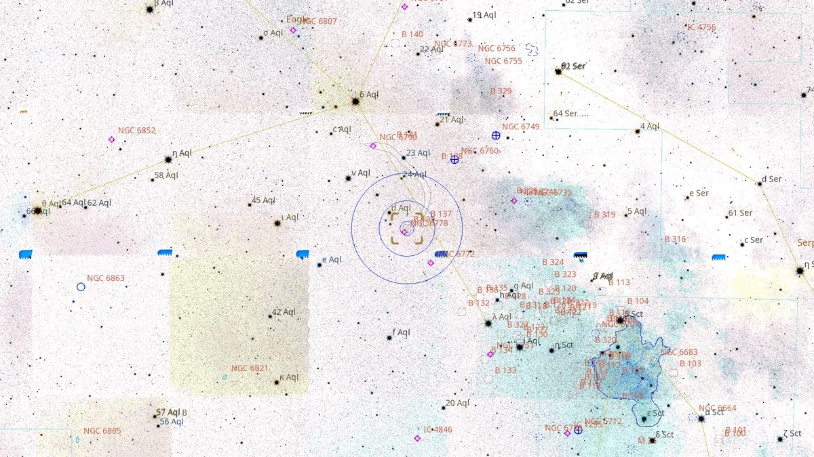
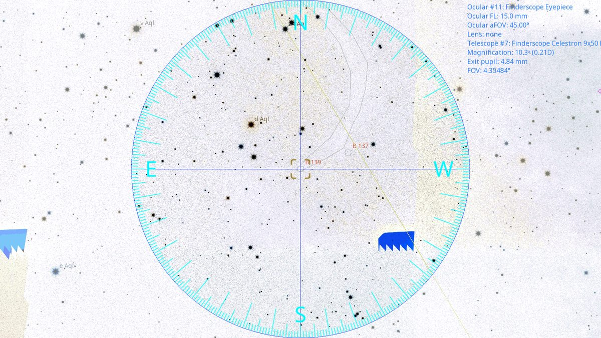
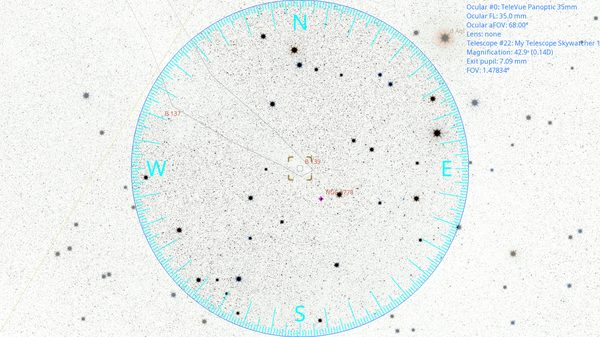

Pal 11 (DN)
Dark Nebula in Aquila
| R.A. | Dec. | Size | Mag | SB | Cnt.St | Type | Distance | Chart |
|---|---|---|---|---|---|---|---|---|
| 19h 18m 03.4s | -01° 27′ 52.4″ | 4.3′ | 5.0 | -- | -- | DN | -- | -- |

Source: POSS-2 UK Schmidt Red (STScI) | Field: 15′ × 15′
Background
[Background — fill from astronomical references for Pal 11.]
My Observing Notes
[Add observing notes here, dated, by aperture.]
References
Charts

Wide-field view with Telrad rings (4°, 2°, 0.5°)

Finderscope view (9×50 RACI, ~4.4° TFOV)

Eyepiece view — 35 mm Panoptic on 12-inch f/5 (1.6° TFOV)